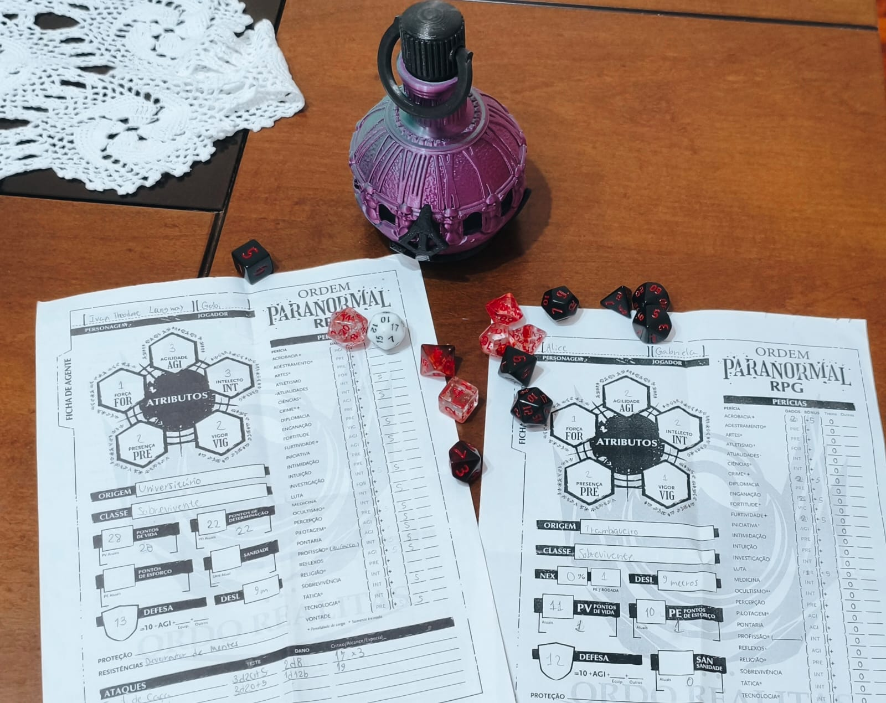
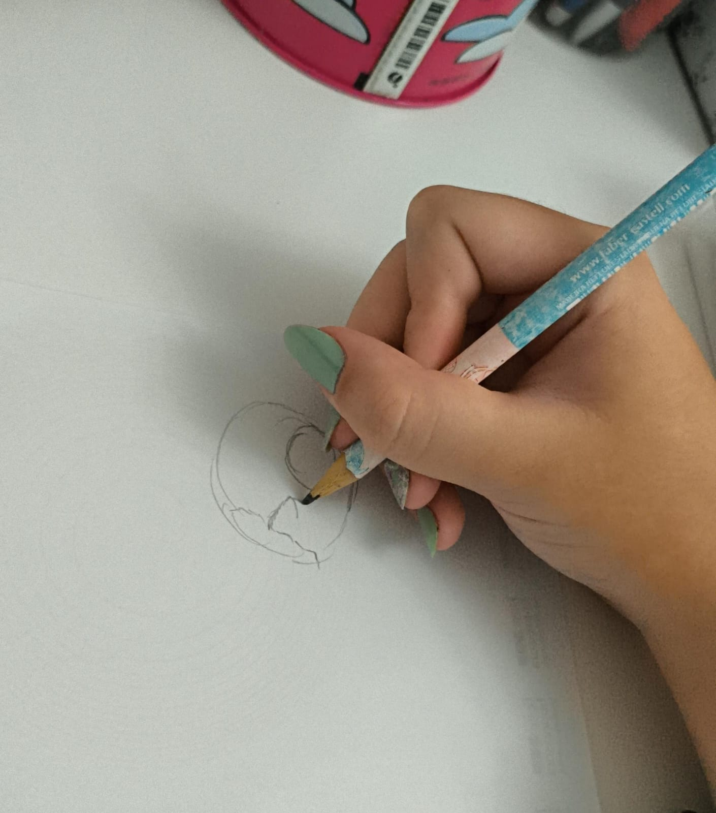
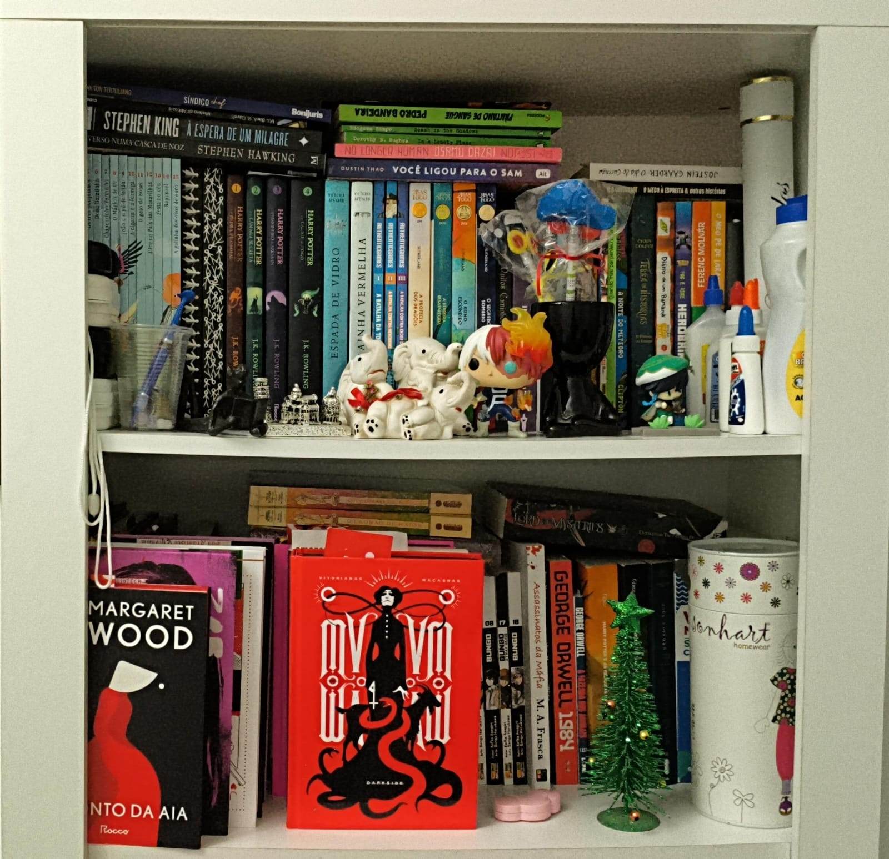

Primeiro Ano
TPA - Técnicas de Programação e Algoritmos
Foi o nosso coordenador, Neymar, que deu esta matéria, onde aprendemos Python
Algumas das atividades:
BD I - Banco de Dados I
O professor desta disciplina foi Claudio Ferrini, e aprendemos a linguagem SQL, especificamente, os subconjuntos: DDL, DML, DQL.
DDL: Define ou modifica a estrutura do banco de dados (tabelas, índices, esquemas).
DML: Manipula os dados dentro das tabelas, inserindo, atualizando ou removendo registros.
DQL: Focada na consulta e visualização de dados armazenados.
Algumas das atividades desenvolvidas:
DD - Design Digital
Disciplina ministrada pelo coordenador do curso e professor Neymar, onde desenvolvemos um jogo, do início do ano até o final do ano.
A seguir, o jogo desenvolvido:
APS - Análise e Projeto de Sistemas
Nosso professor nesta matéria foi o Gildárcio, ele nos ensinou a fazer diagramas de caso de uso, requisitos funcionais e não-funcionais, métodos ágeis, etc
Diagramas realizados para a disciplina:


PW I - Programação Web I
Neste ano, aprendemos HTML, CSS e bem pouquinho de JavaScript, a aula era ministrada pelo professor Claudiney.
A seguir, o último projeto que fizemos naquele ano:
FI - Fundamentos da Informática
Esta era uma aula onde focavamos principamente em fazer relatórios sobre o estado do computador e pesquisas relacionadas ao hardware, sistema operacional, segurança e manutenção do computador. Essa aula era dada pela professora Sigiane
Fotos de mim na aula prática de FI:


Segundo Ano

DS - Desenvolvimento de Sistemas
Gosto de jogar RPG de mesa com os meus amigos, além de jogar, gosto de discutir sobre a história e possibilidades do mundo/universo do RPG.

BD II - Banco de Dados II
Gosto de desenhar desde pequena, apesar de não ser muito talentosa ou boa nisso.
PAM I - Programação de Aplicativos Mobile I
Um dos meus grandes sonhos é escrever um livro, apesar de minhas habilidades precisarem ser melhoradas para o realizar um dia. Vejo na escrita uma forma de falar quem eu sou e no que acredito, e a acho uma atividade relaxante.

ECO - Ética e Cidadania Organizacional
Sempre fui incentivada a ler pelos meus pais. Amo ler, é uma das atividades que acho que não consigo viver sem. Leio de contos, a romances, a poemas, e leio tanto livros físicos quanto os que estão online.
PW II - Programação Web II
Sempre fui incentivada a ler pelos meus pais. Amo ler, é uma das atividades que acho que não consigo viver sem. Leio de contos, a romances, a poemas, e leio tanto livros físicos quanto os que estão online.